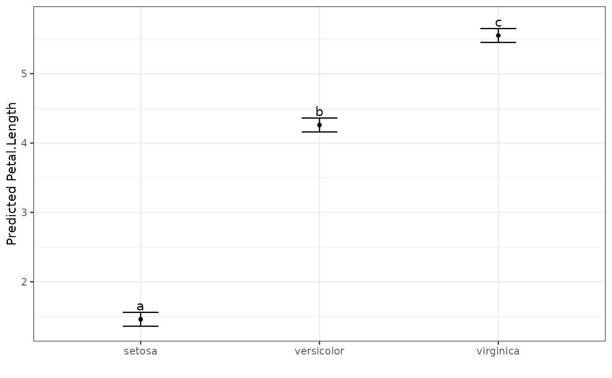

A function for comparing and ranking predicted means with Tukey's Honest Significant Difference (HSD) Test.
Usage
multiple_comparisons(
model.obj,
classify,
sig = 0.05,
int.type = "ci",
trans = NA,
offset = NA,
power = NA,
decimals = 2,
descending = FALSE,
plot = FALSE,
label_height = 0.1,
rotation = 0,
save = FALSE,
savename = "predicted_values",
order,
pred.obj,
pred,
...
)Arguments
- model.obj
An ASReml-R or aov model object. Will likely also work with
lme(nlme::lme()),lmerMod(lme4::lmer()) models as well.- classify
Name of predictor variable as string.
- sig
The significance level, numeric between 0 and 1. Default is 0.05.
- int.type
The type of confidence interval to calculate. One of
ci,1seor2se. Default isci.- trans
Transformation that was applied to the response variable. One of
log,sqrt,logit,powerorinverse. Default isNA.- offset
Numeric offset applied to response variable prior to transformation. Default is
NA. Use 0 if no offset was applied to the transformed data. See Details for more information.- power
Numeric power applied to response variable with power transformation. Default is
NA. See Details for more information.- decimals
Controls rounding of decimal places in output. Default is 2 decimal places.
- descending
Logical (default
FALSE). Order of the output sorted by the predicted value. IfTRUE, largest will be first, through to smallest last.- plot
Automatically produce a plot of the output of the multiple comparison test? Default is
FALSE. This is maintained for backwards compatibility, but the preferred method now is to useautoplot(<multiple_comparisons output>). Seeautoplot.mct()for more details.- label_height
Height of the text labels above the upper error bar on the plot. Default is 0.1 (10%) of the difference between upper and lower error bars above the top error bar.
- rotation
Rotate the text output as Treatments within the plot. Allows for easier reading of long treatment labels. Number between 0 and 360 (inclusive) - default 0
- save
Logical (default
FALSE). Save the predicted values to a csv file?- savename
A file name for the predicted values to be saved to. Default is
predicted_values.- order
Deprecated. Use
descendinginstead.- pred.obj
Deprecated. Predicted values are calculated within the function from version 1.0.1 onwards.
- pred
Deprecated. Use
classifyinstead.- ...
Other arguments passed through to
predict.asreml().
Value
A list containing a data frame with predicted means, standard errors, confidence interval upper and lower bounds, and significant group allocations (named predicted_values), as well as a plot visually displaying the predicted values (named predicted_plot). If some of the predicted values are aliased, a warning is printed, and the aliased treatment levels are returned in the output (named aliased).
Details
Some transformations require that data has a small offset applied, otherwise it will cause errors (for example taking a log of 0, or square root of negative values). In order to correctly reverse this offset, if the trans argument is supplied, an offset value must also be supplied. If there was no offset required for a transformation, then use a value of 0 for the offset argument.
References
Jørgensen, E. & Pedersen, A. R. (1997). How to Obtain Those Nasty Standard Errors From Transformed Data - and Why They Should Not Be Used. https://pure.au.dk/portal/en/publications/how-to-obtain-those-nasty-standard-errors-from-transformed-data--and-why-they-should-not-be-used(d649ca20-d15f-11db-8e26-000ea68e967b).html
Examples
# Fit aov model
model <- aov(Petal.Length ~ Species, data = iris)
# Display the ANOVA table for the model
anova(model)
#> Analysis of Variance Table
#>
#> Response: Petal.Length
#> Df Sum Sq Mean Sq F value Pr(>F)
#> Species 2 437.10 218.551 1180.2 < 2.2e-16 ***
#> Residuals 147 27.22 0.185
#> ---
#> Signif. codes: 0 ‘***’ 0.001 ‘**’ 0.01 ‘*’ 0.05 ‘.’ 0.1 ‘ ’ 1
# Determine ranking and groups according to Tukey's Test
pred.out <- multiple_comparisons(model, classify = "Species")
# Display the predicted values table
pred.out
#> Species predicted.value std.error df groups ci low up
#> 1 setosa 1.46 0.06 147 a 0.1 1.36 1.56
#> 2 versicolor 4.26 0.06 147 b 0.1 4.16 4.36
#> 3 virginica 5.55 0.06 147 c 0.1 5.45 5.65
# Show the predicted values plot
autoplot(pred.out, label_height = 0.5)

if (FALSE) {
# ASReml-R Example
library(asreml)
#Fit ASReml Model
model.asr <- asreml(yield ~ Nitrogen + Variety + Nitrogen:Variety,
random = ~ Blocks + Blocks:Wplots,
residual = ~ units,
data = asreml::oats)
wald(model.asr) #Nitrogen main effect significant
#Determine ranking and groups according to Tukey's Test
pred.out <- multiple_comparisons(model.obj = model.asr, classify = "Nitrogen",
descending = TRUE, decimals = 5)
pred.out
# Example using a box-cox transformation
set.seed(42) # See the seed for reproducibility
resp <- rnorm(n = 50, 5, 1)^3
trt <- as.factor(sample(rep(LETTERS[1:10], 5), 50))
block <- as.factor(rep(1:5, each = 10))
ex_data <- data.frame(resp, trt, block)
# Change one treatment random values to get significant difference
ex_data$resp[ex_data$trt=="A"] <- rnorm(n = 5, 7, 1)^3
model.asr <- asreml(resp ~ trt,
random = ~ block,
residual = ~ units,
data = ex_data)
resplot(model.asr)
# Perform Box-Cox transformation and get maximum value
out <- MASS::boxcox(ex_data$resp~ex_data$trt)
out$x[which.max(out$y)] # 0.3838
# Fit cube root to the data
model.asr <- asreml(resp^(1/3) ~ trt,
random = ~ block,
residual = ~ units,
data = ex_data)
resplot(model.asr) # residual plots look much better
#Determine ranking and groups according to Tukey's Test
pred.out <- multiple_comparisons(model.obj = model.asr,
classify = "trt",
trans = "power", power = (1/3))
pred.out
autoplot(pred.out)
}